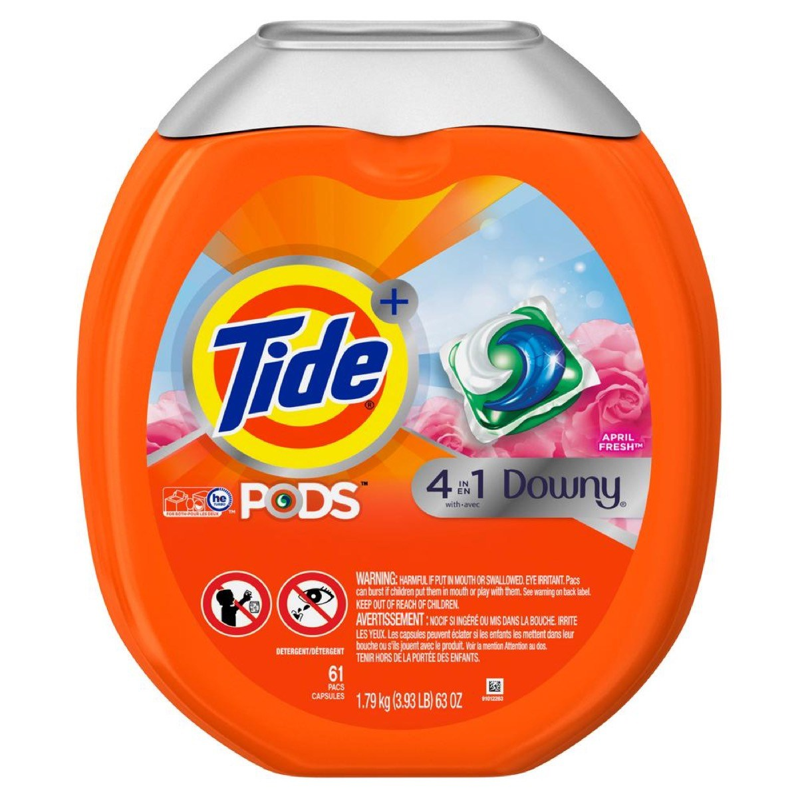

 Tide PODS laundry detergent pacs offer surprisingly powerful clean in 1 step. Combining super concentrated detergent, extra odor fighters, and extra stain removers, each capsule cleans, freshens, and rejuvenates clothes for brighter brights and whiter whites.
Small yet powerful, Tide PODS deliver cleaning power in a convenient, pre-measured unit dose form.
Also, thanks to the special film and HE Turbo technology with quick-collapsing suds, the capsules dissolve completely in all temperatures and do not produce excess suds. The Original scent is infused with floral and fruity notes to help keep your clothes smelling great. More than just a liquid in a pouch, Tide PODS delivers a surprisingly powerful clean in 1 step.